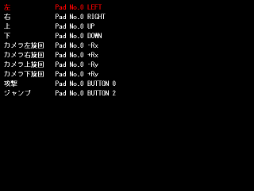

サンプルプログラム キーコンフィグ

ゲーム中の各入力にキーボードやゲームパッドのどのボタン( 又はキー )を割り当てるかを設定するキーコンフィグ画面と、
キーコンフィグ画面で行った設定に沿った入力を取得する処理のサンプルプログラムです。
キーコンフィグ処理を行うプログラム KeyConfig.cpp, KeyConfig.h
キーコンフィグ画面のプログラム KeyConfigScreen.cpp
キーコンフィグ設定のテストを行うプログラム KeyConfigTest.cpp
実行ファイルはこちら
キーコンフィグ処理を纏めた KeyConfig.cpp, KeyConfig.h は設定をファイルに保存する機能もあるので、
そのまま実際のゲームに流用することも可能です。
尚、このサンプルではゲームパッドの入力に GetJoypadDirectInputState を使用しています。
GetJoypadDirectInputState は GetJoypadInputState よりも取得できる情報が多く、主にゲームパッドによって扱いが異なる
右スティックの入力を取得するために使用します。
戻る